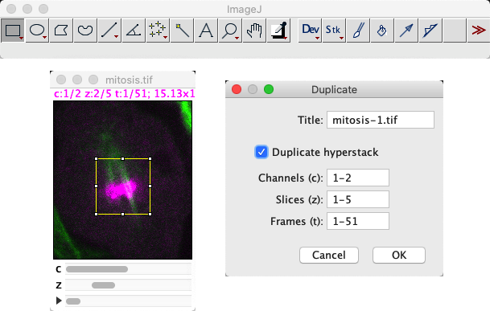
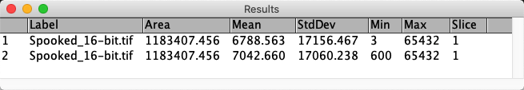
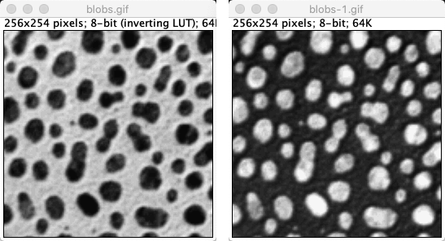

ImageJ: Point operations
Contents
ImageJ: Point operations#
Introduction#
This section introduces image processing with ImageJ. It shows where to find the main point operations, including some tips (and warnings) about their use, along with a few exercises to try them out.
Before we begin#
Before we embark on processing pixels, there are a couple of things we need to know how to do in preparation.
Duplicating images#
One of the most important ImageJ shortcuts to learn is Shift + D to duplicate the image. This applies the command .
Being able to quickly duplicate an image matters for two main reasons:
We often want to process duplicates of an image in different ways, and then combine or compare the results.
Mistakes happen, and is rather limited; it can undo some processing steps applied to a single image slice, but not always… and it can’t undo operations applied to image stacks
When working with an image in ImageJ, I almost always have at least one duplicate lingering around for when when things inevitably go wrong.
But has an extra, hidden bonus: it’s supports extracting just a part of the image. This is controlled both by any ROI and by selecting subsets of channels, z-slices or time points where relevant. I frequently use duplication as a way to extract the channel from an image, as a more convenient alternative to .
{kind=link}
Why can’t ImageJ’s ‘Undo’ undo much?
Implementing ‘undo’ in software is quite tricky. Especially in flexible software that enables the user to do a lot of different things.
When it comes to image processing, undo effectively requires the software to quietly duplicate the pixel values of an image before any processing step, so that they can be recovered later if needed. For a small image, that can work fine. But for big images (say, 1 GB or more), duplicating that much data could significantly slow down the software and potentially result in lots of out-of-memory errors.
ImageJ provides some very limited undo support for 2D slices, but it’s best not to rely on it. In general, it’s left up to the user to decide when duplicating is necessary. If you suspect you might regret a processing step, then it’s best to always duplicate the image beforehand with Shift + D.
Converting to 32-bit#
The second thing I often do when processing an image in ImageJ is to convert it to 32-bit floating point, using .
This isn’t always essential, but we will soon see examples where the type of the image makes a difference to the result. So you should always at least consider converting.
Point operations for single images#
Many point operations for single images are found in the submenu. At the top of the list come the arithmetic operations: , , and .
Open the image Spooked_16-bit.tif, and apply only the following steps:
Measure the mean pixel value of the image
Subtract 600 from all pixel values
Add 600 to all pixel values
Measure the mean pixel value of the image
Mathematically, you should get the same mean measurements. Can you explain the result?

Firstly, the commands you need to run are:
, or press M
with the value 600
with the value 600
, or press M
When I do this, I get the following results table:
The reason the mean values differ is because we have a 16-bit image. After subtraction, any values that were less than 600 become clipped to zero. All these become 600 after the addition, pushing up the overall mean.
If you didn’t see this effect, then I would guess you had the foresight to run . If you do this, the mean values match after all.
The and commands implement the log and gamma transforms respectively. The gamma transform is more common, since it contains an adjustable gamma parameter that can be used to tune the effect.
Beware of the bit-depth with nonlinear transforms!
When applying gamma or log transforms to 8-bit or 16-bit images, ImageJ applies some additional (linear) rescaling to the result so that the output falls within the range supported by the image.
This rescaling isn’t needed for 32-bit images. This means that if you apply either command to a 32-bit image then it can seem that the image disappears. You’ll need to follow up by using to reset the LUT display range to see the output properly.
Explore the use of for enhancing the contrast of Spooked_16-bit.tif.
If you want to see both the human and the ghost, should the gamma value be less than 1, equal to 1, or greater than 1?
Tip: To get a feeling for how the values are changing, create a histogram of the image first and press the Live button on the histogram. Then run the gamma command, turn on the Preview option and adjust the slider. You should now see a live update of how changing the gamma affects the pixel values.

The gamma needs to be less than 1.
When the gamma is equal to 1, it isn’t doing anything at all. When it is greater than 1, it’s applying a non-linear adjustment – but not one that really helps in this case.
Image inversion#
The command implements image inversion.
Inverting images or inverting LUTs?
should not be confused with the command, which inverts the LUT but does nothing to the pixel values!
Moreover, whether the LUT is inverted can be saved inside the file – and so you could potentially open an image and find its LUT was inverted before you even started to do anything, and thereby misjudge whether structures are really brighter or darker than everything else.
is an example of this. It took a long time before I realized that the pixel values inside the blobs are higher than the background, because of the sneaky inverted LUT. As is often the case, the signs of an inverted LUT are evident in the text at the top of an image window.
{kind=link}
works differently when applied to different image types. Like in the 8-bit case, pixel values are always subtracted from some ‘maximum’.
How this maximum is determined for 16 and 32-bit images in ImageJ?
Note: the methods used for 16 and 32-bit images are different from one another!

When I first wrote this question, to invert a 16-bit image pixel were subtracted from the maximum value within the original image. This is also true for stacks: the maximum value in the entire stack is found.
Since ImageJ v1.53k, the maximum value of 65535 is used… unless you happen to have a different Unsigned 6-bit range value specified via the Set button via the Brightness & Contrast dialog. I only know about this sneaky alternative option through the ImageJ release notes.
For 32-bit image inversion, the pixels are subtracted from the display maximum, i.e. whatever maximum is set in the dialog box. Consequently, inverting a 32-bit image can give different results each time it is applied if the contrast settings are not kept the same!
I personally dislike this unpredictable weirdness. I would happily apply to an 8-bit image. For anything else, I’d generally rather convert to 32-bit and multiply by -1 – so that I know the results should be repeatable, regardless of brightess & contrast settings.
The Image Calculator#
is used to combine two images in various ways. It is one of ImageJ’s most indispensable commands.

Fig. 60 The Image Calculator… dialog#
But beware of the bit-depth and type! If any of the original images are 8 or 16-bit, then the result might require clipping or rounding, in which case selecting the option to create a 32-bit (float) result may be necessary to get the expected output.
finally makes it possible for us to check whether the pixel values of two images are all identical – without relying on summary measurements or histograms.
Use it to determine which two of the images Same_1.tif, Same_2.tif and Same_3.tif are identical in terms of pixel values.

My preferred way to check this is to subtract the images from one another, making sure that the result is 32-bit (in case there are negative values). Doing this should reveal something hidden in the image Same_2.tif. Note that the contrast settings differ between Same_1.tif and Same_3.tif, so they may look different.
(Note that the calculator’s Difference or Divide commands could also be used. XOR would work as well, but its output is harder to interpret since it involves comparing individual bits used to store each pixel value and gives an output where all matching bits are 0 and all non-matching bits are 1. When converted back into actual decimal values and then to colors for us to look at, this can appear strange. But at least if the resulting image is not completely black then we know that the original input images were not identical.)